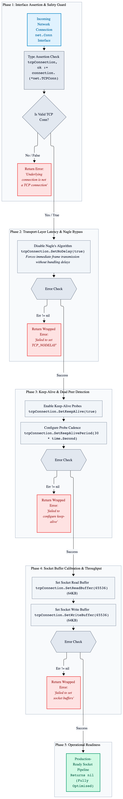
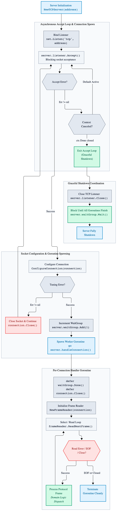
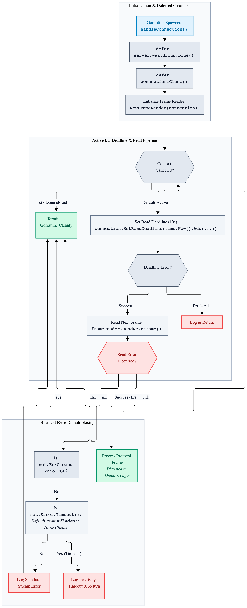
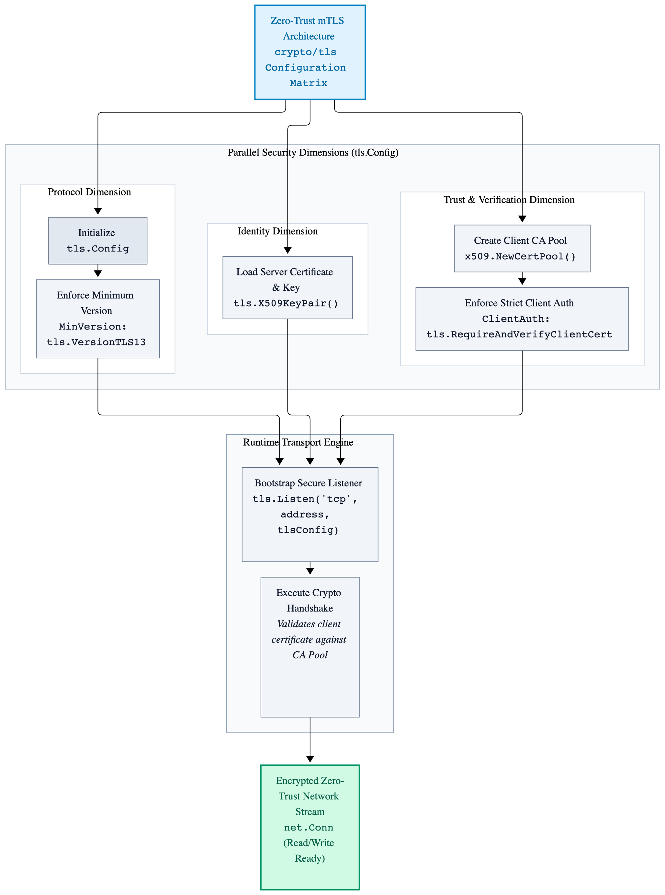
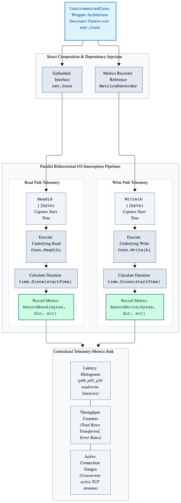

Chapter 7: Advanced Networking Programming: TCP Listeners and Socket Tuning
While Go's net package provides a clean, idiomatic interface for socket programming,
high-throughput network engineering requires explicit control over transport-layer behaviors.
Production services must tune socket descriptors for low latency, manage TCP keep-alives,
disable Nagle's algorithm where message cadence demands immediate delivery, and coordinate graceful listener shutdowns.
7.1 Configuring Socket Options for Low Latency
By default, TCP stacks use Nagle's algorithm (TCP_NODELAY disabled) to combine small outgoing packets
into larger segments, reducing packet overhead at the cost of latency. For real-time binary protocols and low-latency
RPC frameworks, infrastructure engineers explicitly disable Nagle's algorithm and configure keep-alives.
package main
import (
"fmt"
"net"
"time"
)
// ConfigureConnection applies production-grade socket options to optimize throughput and latency.
func ConfigureConnection(connection net.Conn) error {
tcpConnection, ok := connection.(*net.TCPConn)
if !ok {
return fmt.Errorf("underlying connection is not a TCP connection")
}
// Disable Nagle's algorithm to send small binary frames immediately without buffering delays.
if err := tcpConnection.SetNoDelay(true); err != nil {
return fmt.Errorf("failed to set TCP_NODELAY: %w", err)
}
// Enable TCP keep-alive probes to detect dead client connections proactively.
if err := tcpConnection.SetKeepAlive(true); err != nil {
return fmt.Errorf("failed to enable TCP keep-alive: %w", err)
}
if err := tcpConnection.SetKeepAlivePeriod(30 * time.Second); err != nil {
return fmt.Errorf("failed to set keep-alive period: %w", err)
}
// Set read and write buffer sizes to match high-throughput workload requirements.
if err := tcpConnection.SetReadBuffer(65536); err != nil {
return fmt.Errorf("failed to set socket read buffer: %w", err)
}
if err := tcpConnection.SetWriteBuffer(65536); err != nil {
return fmt.Errorf("failed to set socket write buffer: %w", err)
}
return nil
}Figure 7.1: TCP Socket Tuning and Connection Lifecycle Architecture

7.2 Concurrent TCP Server Architecture
Handling thousands of concurrent connections requires an asynchronous accept loop coupled with dedicated per-connection goroutines or worker pools. The following implementation demonstrates a production TCP listener skeleton with connection tuning and resource cleanup.
package main
import (
"context"
"errors"
"fmt"
"io"
"log"
"net"
"sync"
)
// TCPServer manages incoming network connections and coordinates graceful shutdowns.
type TCPServer struct {
listener net.Listener
waitGroup sync.WaitGroup
}
// NewTCPServer initializes a TCP listener on the specified network address.
func NewTCPServer(address string) (*TCPServer, error) {
listener, err := net.Listen("tcp", address)
if err != nil {
return nil, fmt.Errorf("failed to bind TCP listener on %s: %w", address, err)
}
return &TCPServer{
listener: listener,
}, nil
}
// Start begins accepting incoming client connections in the background.
func (server *TCPServer) Start(context context.Context) {
for {
connection, err := server.listener.Accept()
if err != nil {
select {
case <-context.Done():
// Server is shutting down normally; exit accept loop.
return
default:
log.Printf("failed to accept incoming connection: %v", err)
continue
}
}
// Apply socket tuning options immediately upon acceptance.
if err := ConfigureConnection(connection); err != nil {
log.Printf("failed to configure socket options: %v", err)
connection.Close()
continue
}
server.waitGroup.Add(1)
go server.handleConnection(context, connection)
}
}
// handleConnection processes client read/write lifecycles within an isolated goroutine.
func (server *TCPServer) handleConnection(context context.Context, connection net.Conn) {
defer server.waitGroup.Done()
defer connection.Close()
// Initialize the buffered frame reader for binary protocol demultiplexing.
frameReader := NewFrameReader(connection)
for {
select {
case <-context.Done():
return
default:
frame, err := frameReader.ReadNextFrame()
if err != nil {
if errors.Is(err, net.ErrClosed) || errors.Is(err, io.EOF) {
return
}
log.Printf("stream read error: %v", err)
return
}
// Process incoming structured protocol frame.
_ = frame
}
}
}
// Close gracefully stops the server and waits for active connections to finish.
func (server *TCPServer) Close() error {
if err := server.listener.Close(); err != nil {
return fmt.Errorf("failed to close listener: %w", err)
}
server.waitGroup.Wait()
return nil
}Figure 7.2: Concurrent TCP Server Architecture

7.3 Enforcing Active I/O Deadlines
Relying solely on TCP keep-alives is insufficient for detecting hung clients, stalled writes, or slowloris-style denial-of-service vectors. Production servers must enforce strict read and write deadlines inside the connection handling loop to prevent goroutine leaks.
// handleConnection processes client read/write lifecycles within an isolated goroutine with enforced deadlines.
func (server *TCPServer) handleConnection(context context.Context, connection net.Conn) {
defer server.waitGroup.Done()
defer connection.Close()
frameReader := NewFrameReader(connection)
for {
select {
case <-context.Done():
return
default:
// Enforce a strict read deadline for the incoming frame header and payload.
if err := connection.SetReadDeadline(time.Now().Add(10 * time.Second)); err != nil {
log.Printf("failed to set read deadline: %v", err)
return
}
frame, err := frameReader.ReadNextFrame()
if err != nil {
if errors.Is(err, net.ErrClosed) || errors.Is(err, io.EOF) {
return
}
if networkError, ok := err.(net.Error); ok && networkError.Timeout() {
log.Printf("client connection timed out due to inactivity")
return
}
log.Printf("stream read error: %v", err)
return
}
// Process incoming structured protocol frame.
_ = frame
}
}
}Figure 7.3: Enforcing Active I/O Deadlines

7.4 Advanced Listener Control Via net.ListenConfig
Standard net.Listen hides low-level socket configuration hooks. For zero-downtime rolling deployments
and high-performance kernel tuning (such as setting SO_REUSEADDR, SO_REUSEPORT,
or adjusting listener backlog queues beyond SOMAXCONN), infrastructure engineers use net.ListenConfig
with a custom Control callback.
// CreateListenerWithControl initializes a listener with custom kernel socket control hooks.
func CreateListenerWithControl(context context.Context, address string) (net.Listener, error) {
listenConfig := net.ListenConfig{
Control: func(network, address string, rawConn syscall.RawConn) error {
var sysCallError error
err := rawConn.Control(func(fileDescriptor uintptr) {
// Example: Set socket reuse options or adjust backlog parameters at the syscall level.
// unix.SetsockoptInt(int(fileDescriptor), unix.SOL_SOCKET, unix.SO_REUSEPORT, 1)
})
if err != nil {
return err
}
return sysCallError
},
}
return listenConfig.Listen(context, "tcp", address)
}7.5 Securing the Transport Layer with Mutual TLS (mTLS)
Production network services rarely expose raw unencrypted TCP streams. Integrating Transport Layer Security (TLS)
via Go's crypto/tls package—while enforcing strict cipher suites, minimum TLS versions, and mutual client
certificate authentication (RequireAndVerifyClientCert)—is critical for zero-trust infrastructure.
Key Concepts: Configuring tls.Config, setting MinVersion: tls.VersionTLS13,
managing custom certificate pools, and wrapping raw connections or using tls.Listen.
Figure 7.5: Securing the Transport Layer with Mutual TLS (mTLS)

7.6 Instrumented Telemetry Wrappers (InstrumentConn)
To monitor production network health without cluttering core connection handlers, systems engineers use decorator/wrapper
patterns around net.Conn. By implementing a custom InstrumentedConn struct that wraps net.Conn,
you can transparently record Prometheus metrics for active connection gauges, total bytes transferred, and read/write latencies.
// InstrumentedConn wraps net.Conn to transparently capture transport-layer metrics.
type InstrumentedConn struct {
net.Conn
metricsRecorder MetricsRecorder
}
// Read wraps the underlying connection read operation to record performance telemetry.
func (instrumentedConnection *InstrumentedConn) Read(destinationBuffer []byte) (bytesRead int, readError error) {
startTime := time.Now()
bytesRead, readError = instrumentedConnection.Conn.Read(destinationBuffer)
instrumentedConnection.metricsRecorder.RecordRead(bytesRead, time.Since(startTime), readError)
return bytesRead, readError
}Figure 7.6: Advanced Instrumented Telemetry Wrappers

7.7 Optimizing Handshakes with TCP Fast Open (TFO)
For high-frequency RPC clients and low-latency microservices, the standard 3-way TCP handshake adds an unavoidable round-trip time (RTT) penalty before data transmission begins. Enabling TCP Fast Open allows data to be sent in the SYN packet.
Key Takeaways
-
Socket Tuning: Explicitly configure
TCP_NODELAY, keep-alives, and buffer sizes to optimize real-time binary transport performance. -
Graceful Accept Loops: Combine non-blocking listener loops with
sync.WaitGroupand context cancellation to coordinate clean server shutdowns. - Active I/O Deadlines: Enforce strict read and write timeouts on active sockets to defend against slowloris attacks and prevent orphaned goroutine leaks.
-
Low-Level Control Hooks: Use
net.ListenConfigwith custom syscall control callbacks to configure kernel-level options likeSO_REUSEPORT. - Zero-Trust mTLS: Secure network boundaries by enforcing TLS 1.3 and mutual client certificate authentication.
-
Decorator Telemetry: Wrap
net.Conninterfaces transparently to capture comprehensive transport metrics without polluting core business logic.